이 도구는 CSCL(Computer-Supported Collaborative Learning) 원리에 따라 설계됐습니다. 여러분은 "수동적 시청자"가 아니라 지식 공동체의 참여자로서 질문을 제기하고, 근거를 모으고, 경로를 남기며 — 다른 학습자·전문가의 지도와 자신의 지도를 비교해 나갑니다. 각 기능은 특정 학습 행위(learning move)를 유도하도록 만들어졌으니, 버튼을 누르기 전에 "지금 나는 어떤 인식 행위를 하고 있는가?"를 의식하며 사용해 보세요. This tool is designed around CSCL (Computer-Supported Collaborative Learning) principles. You are not a passive viewer — you are a participant in a knowledge-building community: asking questions, collecting evidence, recording paths, and comparing your emerging map against peers and experts. Each feature is built to invite a specific learning move, so before each click ask: what epistemic act am I performing right now?
본 도구가 전제하는 다섯 가지 학습 원리입니다. 기능 설명을 읽기 전에 먼저 이해해 두면, 각 버튼이 왜 그 자리에 있는지 의미를 잡을 수 있습니다. Five learning principles embedded in this tool. Reading them first helps you see why each button exists — not just how to click it.
개념은 교재에서 "전달"되지 않습니다. Discussion·Case·Notes를 통해 동료들과 함께 집단적으로 구성되는 대상입니다.
Concepts are not "delivered" from textbooks — they are collectively constructed through Discussion, Cases, and Notes alongside peers.
여러분은 질문(Q)·주장(C)·근거(E)를 직접 구분해 게시하며, 자신의 인식 활동을 스스로 분류·책임집니다.
You tag your own posts as Question (Q), Claim (C), or Evidence (E) — taking explicit responsibility for your epistemic acts.
클릭·체류·경로 기록은 모두 이벤트 로그로 남아, 이후 전문가 경로와의 비교·자기성찰의 재료가 됩니다.
Clicks, dwell time, and recorded paths are logged — becoming material for expert-path comparison and self-reflection.
좌하단의 정합도 게이지(Mirror Mode)는 "내 이해가 전문가와 얼마나 정렬되어 있는가"를 실시간으로 되돌려줍니다.
The bottom-left alignment gauge (Mirror Mode) returns real-time feedback on how closely your understanding aligns with expert structure.
상담↔임상의 공통 허브를 탐색하는 경험 자체가 경계를 넘나드는 전문가 정체성을 구성합니다.
Exploring counseling↔clinical bridge hubs is itself a process of forming a boundary-crossing professional identity.
Delphi·카드소트 모드는 브릿지 관계의 신뢰도(confidence)를 투표로 갱신합니다 — 본 온톨로지 자체가 "작업 중인 가설"입니다.
Delphi and card-sort modes update bridge-edge confidence by vote — the ontology itself is treated as a "working hypothesis".
처음 진입하면 상담심리↔임상심리 두 도메인이 실시간 포스 시뮬레이션으로 움직이는 랜딩 화면을 만납니다. 네 가지 핵심 기여(C1–C3, S5)가 카드 형태로 소개됩니다. When you first enter, a live force-simulated landing screen connects the Counseling and Clinical domains. Four core contributions (C1–C3, S5) are introduced as cards.
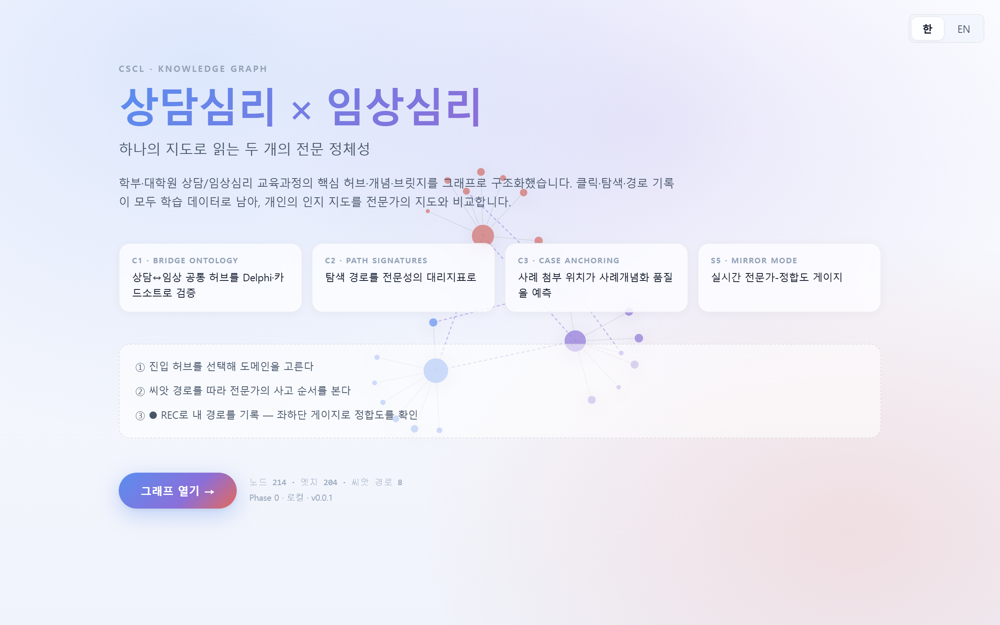
한국어 랜딩 — 오른쪽 상단의 한 / EN 토글로 언어를 전환할 수 있습니다.
Korean landing — toggle 한 / EN at top-right to switch language.
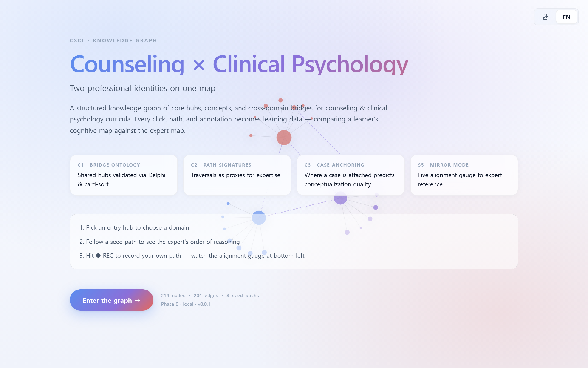
같은 화면의 영어 버전. Open the graph → 버튼으로 진입합니다.
English version of the same page. Click Open the graph → to enter.
랜딩은 단순 소개가 아니라 "오늘 나는 어떤 질문을 안고 들어가는가?"를 세워 두는 자리입니다. C1–C3·S5 카드를 읽고, 여러분이 가장 먼저 확인하고 싶은 가설을 하나만 메모장에 적어 두세요.
Landing is not just an intro — it's where you set "what question am I entering with today?". Read the C1–C3 / S5 cards, and jot down the one hypothesis you most want to check.
가운데 캔버스는 D3 포스 시뮬레이션입니다. 노드 크기·색은 계층(허브/개념)과 도메인(상담/임상/공통)을 나타내며, 줌 레벨에 따라 라벨이 점진적으로 드러납니다. The center canvas is a D3 force layout. Node size & color encode tier (hub/concept) and domain (counseling/clinical/bridge); labels progressively reveal as you zoom in.
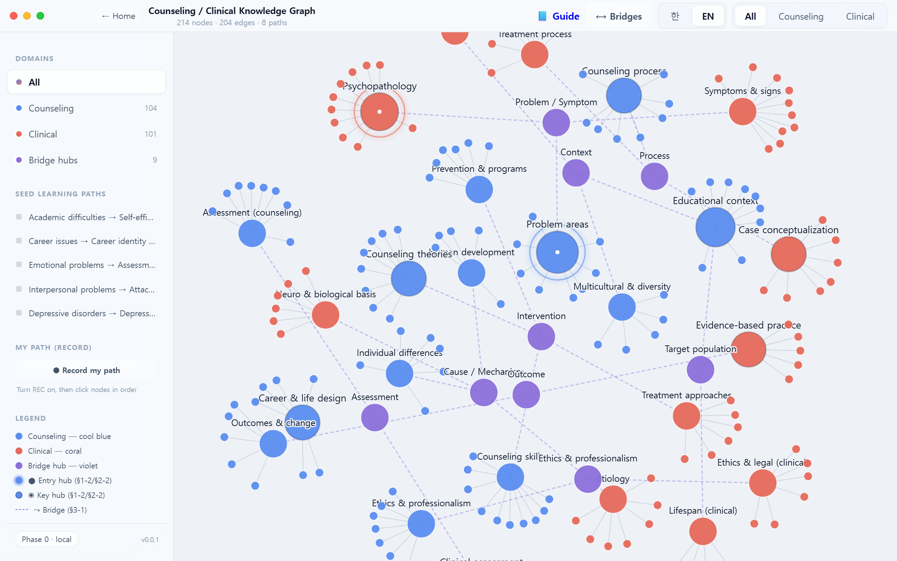
상담 임상Clinical 공통 허브Bridge hub
줌 아웃 상태에서 먼저 "큰 덩어리"를 봅니다. 어디가 중심이고, 어디가 가장자리인가? 어느 쪽이 더 촘촘한가? 이 구조 감각이 이후 세부 학습의 스키마 틀이 됩니다.
At full zoom-out, take in the "big shape" first — where is the center? where are the edges? which side is denser? This structural sense becomes the schema scaffold for later detail learning.
상단의 ⟷ Bridges 토글을 켜면 두 도메인을 잇는 bridges_to 관계만 부각됩니다. 이것이 본 도구의 핵심 연구 가설(C1)입니다 — 공통 허브는 주어진 것이 아니라 Delphi·카드소트로 검증되어야 할 가설입니다.
Toggle ⟷ Bridges to highlight only the bridges_to edges spanning the two domains. This is the research hypothesis (C1) — shared hubs are not given; they must be validated via Delphi / card-sort.
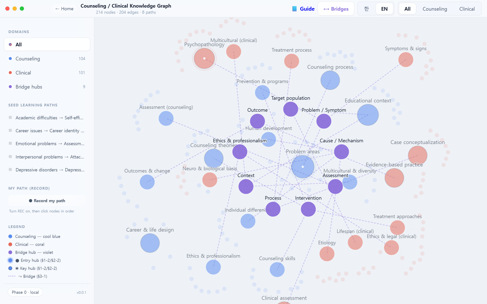
브릿지는 "정답"이 아니라 검증 대상입니다. 여러분이 동의하지 않는 브릿지를 최소 한 개 찾아 Discussion에 문제 제기해 보세요 — 반증(E로 근거 제시)은 가장 강력한 CSCL 기여입니다.
Bridges are not "correct answers" — they are claims to be tested. Find at least one bridge you disagree with and challenge it in Discussion. Providing counter-evidence (tagged E) is the most valuable CSCL contribution.
우측 상단 All · Counseling · Clinical 버튼으로 표시 도메인을 좁힐 수 있습니다. 아래는 상담심리만 남긴 상태. Use All · Counseling · Clinical at the top to narrow the display. Below shows Counseling only.
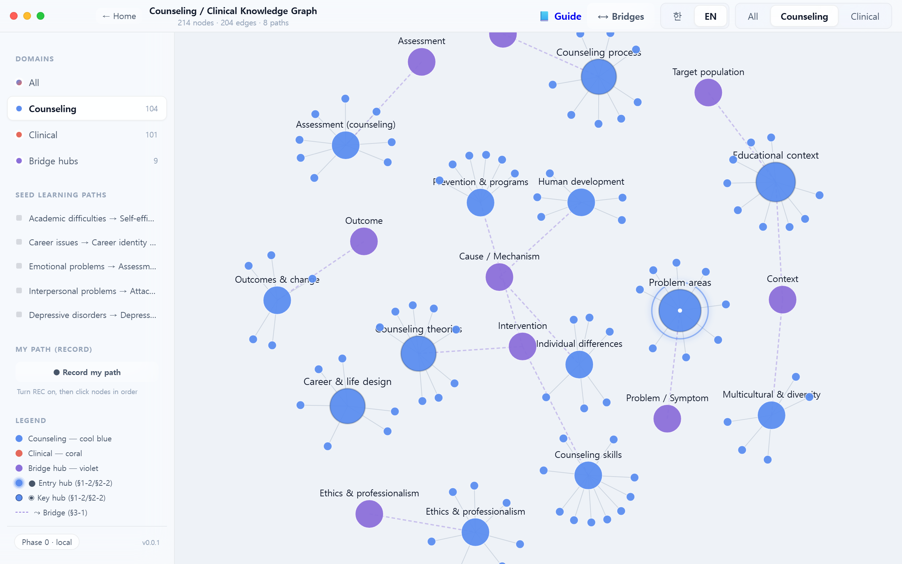
한 도메인만 남겼을 때 어떤 개념이 사라지는지를 주목하세요. 그 "사라짐"이 바로 다른 도메인의 고유 영역입니다. 상담↔임상을 교차 전환하며 각 도메인의 정체성 윤곽을 감지합니다.
When only one domain is visible, pay attention to what disappears — those absences are the other domain's unique territory. Toggle counseling↔clinical to sense each domain's identity contour.
노드를 클릭하면 오른쪽에 상세 패널이 열립니다. 4개의 탭(Overview · Discussion · Cases · Notes)이 한 노드에 묶여 있어, 한 개념에 대한 읽기·토론·사례·개인 메모가 분리되지 않습니다. Clicking a node opens the right-side panel with four tabs (Overview · Discussion · Cases · Notes) — reading, discussion, case anchoring, and personal notes stay bound to the same concept.
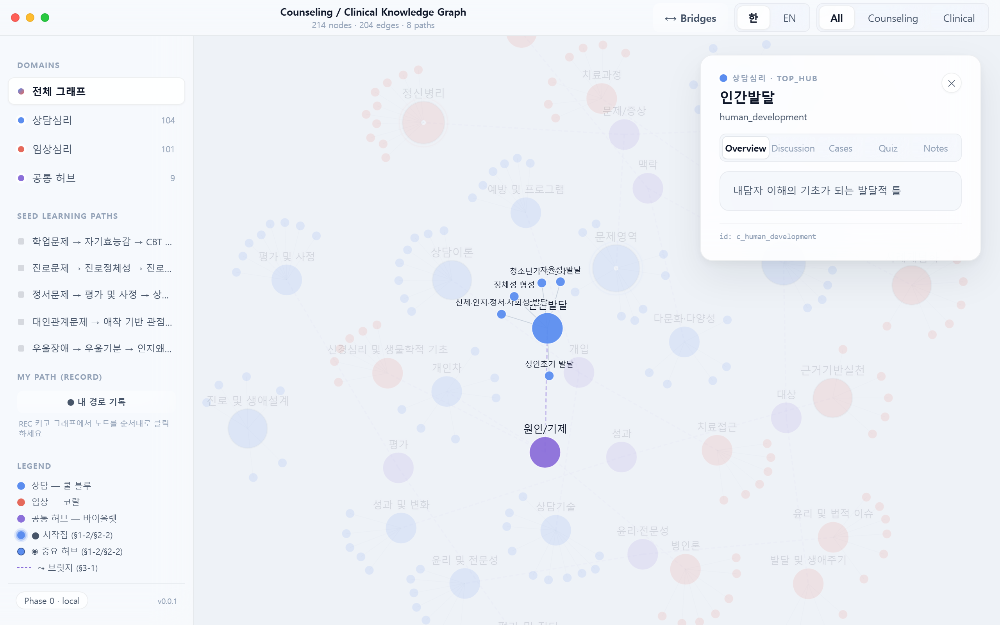
Overview 탭에는 노드 설명과 공통 허브 여부, 연결된 도메인 정보가 표시됩니다.Overview shows the description, whether it's a bridge hub, and connected domains.
한 노드의 네 탭은 "동일 개념에 대한 네 가지 접근"입니다. Overview(정의) → Discussion(집단 의미 협상) → Cases(실제 적용) → Notes(개인 통합). 이 순서대로 탭을 돌며 머무는 것이 CSCL의 "layered engagement"입니다.
The four tabs are "four approaches to the same concept": Overview (definition) → Discussion (group meaning negotiation) → Cases (real application) → Notes (personal integration). Cycling through them in order is what CSCL calls "layered engagement".
토론 메시지마다 Q 질문 C 주장 E 근거 중 하나를 선택합니다. 이 태그는 나중에 인식론적 움직임 분석(epistemic-move coding)에 쓰입니다. ⌘/Ctrl + Enter로 빠르게 게시. Each discussion post carries one of Q Question C Claim E Evidence. These feed later epistemic-move coding analytics. Use ⌘/Ctrl + Enter to post quickly.
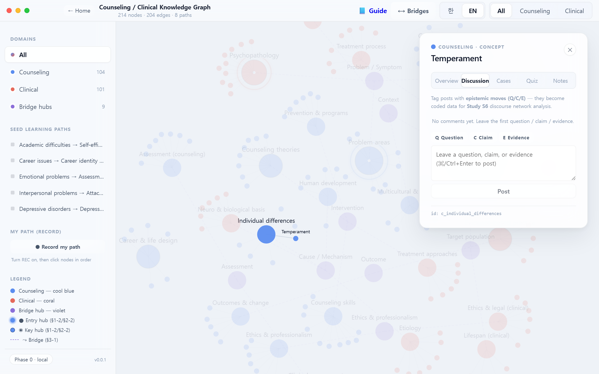
CSCL 담화 규범: ① 주장(C)은 반드시 근거(E)와 쌍으로 → ② 동료의 주장에는 동의보다 반증 가능성으로 반응 → ③ 답이 없는 질문(Q)도 가치 있는 기여 → ④ 내 주장이 반박되면 수정이 기본 반응. 이것이 Scardamalia의 "지식 구축 담론(KBDiscourse)" 규범입니다.
CSCL discourse norms: ① Every Claim (C) must be paired with Evidence (E) → ② respond to peers' claims with falsifiability rather than agreement → ③ unanswered Questions (Q) are themselves valuable contributions → ④ if your claim is challenged, revise by default. These are Scardamalia's Knowledge-Building discourse norms.
사례를 개념 노드에 첨부합니다. "어느 노드에 붙였는가" 자체가 연구 변수(C3)입니다 — 사례개념화 품질을 예측하는 대리지표로 사용됩니다. Attach a case to a concept node. Which node you anchor to is itself a research variable (C3) — a proxy for case-conceptualization quality.
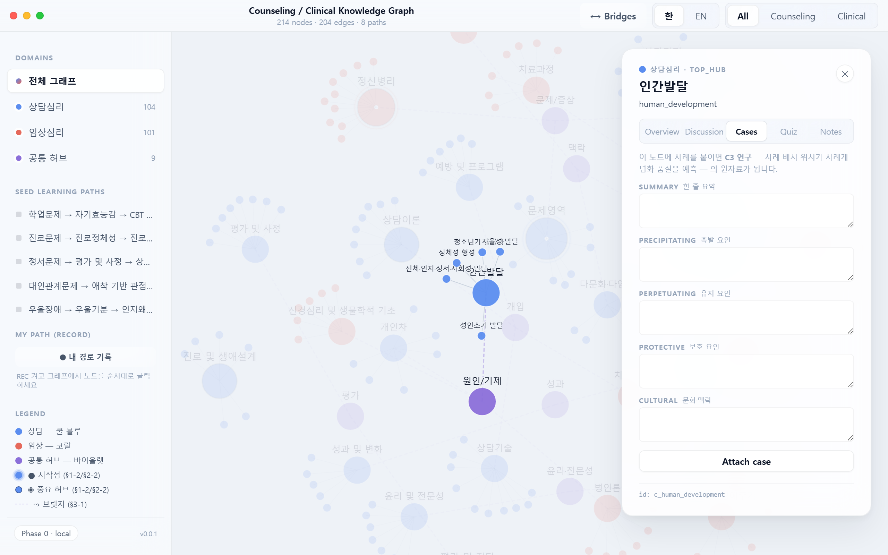
사례를 노드에 붙이는 일은 "정답 찾기"가 아니라 해석 행위입니다. 같은 내담자 사례를 친구는 어느 노드에 붙였나요? 차이를 비교하며 선행–유지–보호–문화 네 축으로 다시 논증해 보세요.
Anchoring a case is not "finding the right answer" — it's an interpretive act. Where did your peer anchor the same case? Compare and re-argue along four axes: precipitating · perpetuating · protective · cultural.
노드별 개인 메모. 현재는 로컬 저장(localStorage)이며, 로그인 연동 시 사용자 단위로 분리됩니다. 저장 시 note_save 이벤트가 로그에 쌓입니다.
Per-node private notes. Currently stored in localStorage; separated per user once auth is wired. Saving emits a note_save event to the log.
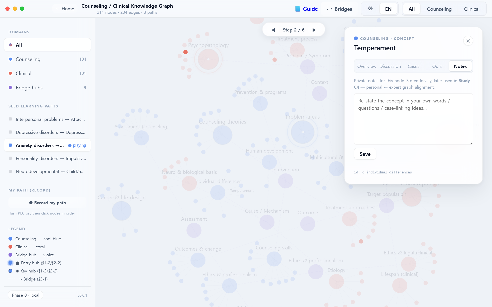
Notes는 "내가 이 개념을 내 말로 다시 쓸 수 있는가?"를 시험하는 자리입니다. 교재 표현을 복사하지 말고, 실제 내담자/사례 한 가지를 상상하며 서술해 보세요 — Chi(2018)의 self-explanation 효과가 가장 강하게 나타나는 조건입니다.
Notes is where you test "can I re-state this concept in my own words?" Don't copy the textbook — write while imagining one specific client/case. This is the condition under which Chi (2018)'s self-explanation effect is strongest.
좌측 SEED LEARNING PATHS 목록에서 경로 하나를 선택하면, 그래프가 해당 노드 시퀀스를 단계별로 강조합니다. 전문가가 설계한 추천 경로와 내 탐색 경로를 나중에 비교할 수 있습니다 — 이것이 경로 시그니처(C2) 연구의 기반입니다. Pick a path in the left SEED LEARNING PATHS list and the graph steps through that sequence. Your traversal can later be compared to the expert-designed reference — the foundation of path signatures (C2).
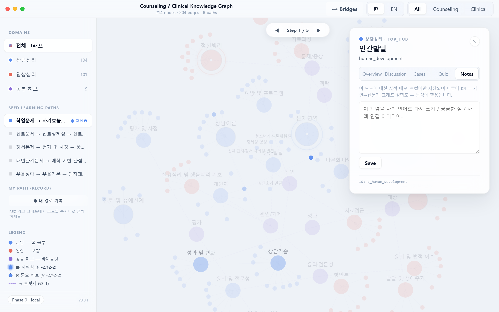
씨앗 경로는 전문가가 개념을 연결한 순서입니다. 그대로 따라가기만 하면 CSCL이 아닙니다 — 전문가 순서와 내 순서가 어디서 갈라지는지를 주목하고, 그 분기점을 Discussion에 남기세요.
A seed path is the order in which an expert connected the concepts. Merely replaying it is not CSCL — attend to where your order diverges from the expert's, and post that divergence point to Discussion.
우측 상단 한 / EN 토글로 UI와 라벨을 전환합니다. 영문 라벨이 채워진 노드는 영어로, 그렇지 않은 개념 노드는 한글이 유지됩니다(현재 콘텐츠 작업 진행 중). Toggle 한 / EN at the top-right. Nodes with English labels show in English; concept nodes missing translations fall back to Korean (labelEn population is ongoing).
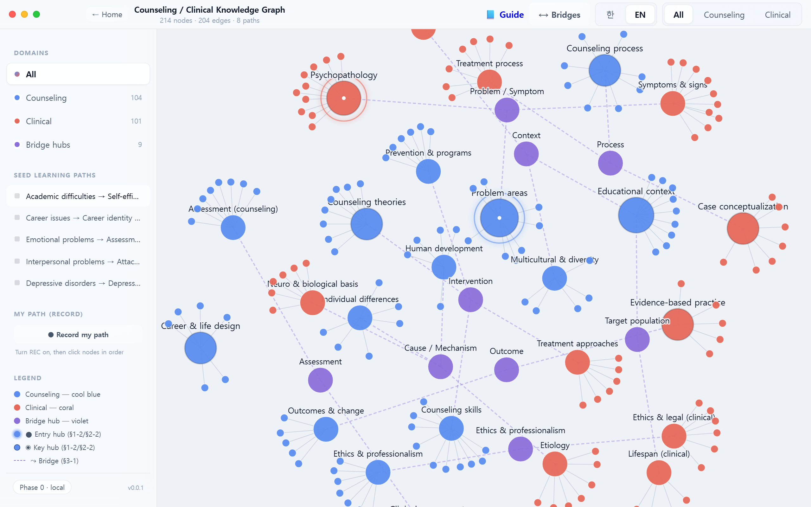
국제 문헌의 용어(영문)와 임상 현장 언어(국문) 사이의 간극을 의식적으로 경험하도록 설계됐습니다. 같은 노드를 두 언어로 읽을 때 의미가 똑같이 남는가?를 확인하세요.
The toggle is designed to make you feel the gap between international-literature terminology (EN) and clinical-practice language (KO). Ask: does the meaning survive intact across the two labels?
각 기능을 낱개로 쓰는 것이 아니라, 한 회차(예: 90분 수업) 동안 다음 5단계를 한 사이클로 묶는 것이 권장됩니다. 이 사이클이 지식 구축 세션 한 단위입니다. Don't use the features in isolation — over a single session (e.g., 90 minutes), chain the five steps below into one knowledge-building cycle.